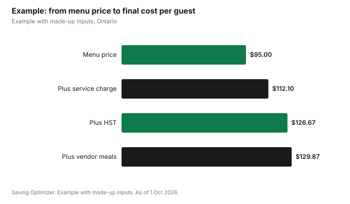

Weddings · Canada
Wedding Catering in Canada: Per-Person Pricing, Service Charges and Taxes

Wedding catering in Canada is quoted per person, but the price you pay includes more than the menu: a mandatory service charge, sales tax on both the food and that charge, and sometimes venue fees, staffing and rentals. Under CRA rules, a mandatory service charge is part of the taxable price, so in Ontario 13% HST applies to it; a voluntary tip is not taxed. At one Toronto museum, food, alcohol and staffing from its caterers also carry a 15% venue fee. Together, these can add a third or more to the menu price, so always ask for a sample invoice with every line shown.
Key takeaways
- Ask for the per-person price, service charge, tax and any venue fee as separate lines.
- CRA: mandatory service charges are taxable; voluntary tips are not.
- Sales tax ranges from 5% GST to 15% HST depending on the province.
- Plated, buffet, family style and stations differ in food and staffing costs.
- Collect dietary needs early; Health Canada lists 11 common food allergens.
- Example with made-up inputs: a $95 menu becomes about $130 per guest.
Plated, buffet, family style and stations
| Format | How it works | Cost drivers |
|---|---|---|
| Plated | Servers bring each course; guests pre-select a main | More servers; precise counts |
| Buffet | Guests serve themselves | More food to avoid running out; fewer servers |
| Family style | Shared platters at each table | More platters and dishes; moderate staffing |
| Stations | Chefs serve at themed stations | Chef attendants; equipment |
| Cocktail reception | Passed and stationary small plates | Number of pieces per guest; length of reception |
No format is always cheapest. A buffet saves servers but needs more food so the last table is not left with scraps; plated service needs more staff but controls portions. Ask caterers to quote the same menu in two formats so you can compare.
Service charges versus gratuities
A service charge is a fee the caterer or venue adds to every bill, often a percentage of food and drink. The CRA treats a mandatory service charge or gratuity as part of the price of the supply, so GST or HST applies to it. A voluntary tip you choose to give is not part of the taxable price. Ask what the service charge pays for: some caterers pass it to staff, others keep it as revenue. If it does not go to staff, you may want to budget a separate tip.
HST and GST on top
| Province or territory | Tax |
|---|---|
| Ontario | 13% HST |
| Nova Scotia | 14% HST |
| New Brunswick, Newfoundland and Labrador, PEI | 15% HST |
| Alberta, Yukon, NWT, Nunavut | 5% GST |
| B.C., Manitoba, Saskatchewan | 5% GST plus provincial sales tax |
| Quebec | 5% GST plus 9.975% QST |
Tax applies to the menu price and the mandatory service charge. Venue fees on catering, such as the Gardiner Museum's 15% venue landmark fee, add to the bill too; ask how tax applies to them.
Late-night food
Late-night snacks are common and can be cheaper per guest than another course, since not every guest stays or eats. Caterers may price late-night by the person or by the piece, and some venues count it toward the minimum spend. Order for the number expected to stay, not the full guest list, and ask whether it can be added later once your count firms up.
Dietary needs and allergies
Ask about dietary needs on the RSVP. Health Canada lists the most common food allergens as peanuts, tree nuts, sesame seeds, milk, eggs, fish, crustaceans and molluscs, soy, wheat and triticale, sulphites and mustard. Give the caterer a list by guest and table, ask how they prevent cross-contact, and make sure servers know which plates are which. Vegetarian, vegan, halal, kosher and gluten-free meals may cost more or less than the main menu; ask.
Food safety at buffets
Health Canada advises refrigerating perishable food within two hours and throwing out food left at room temperature longer. A buffet should have a set service window and hot and cold holding, and leftovers should only be packed up if they have been kept safely. Ask the caterer whether they allow leftovers to be taken home and how they package them.
Tastings, counts and changes
Many caterers offer a tasting once you book or pay a deposit; ask whether it is free, how many people can attend and whether it is credited against your bill. Lock the menu early enough to avoid price changes, and ask whether the quote is guaranteed or subject to increases for food costs before the date. Ask when the final guest count is due and whether, after that date, you pay for the number you confirmed even if fewer guests arrive. Track RSVPs closely, follow up with guests who have not replied, and give a realistic count rather than an optimistic one.
Children's meals, vendor meals and guests with dietary needs are often priced separately. Put each group on a separate line in your guest spreadsheet so the counts you give the caterer are accurate.
Quote checklist
- Per-person menu price and what it includes (courses, bread, coffee, cake cutting).
- Service charge percentage and whether it goes to staff.
- Sales tax on food and service charge.
- Venue fees on catering.
- Staffing: servers, bartenders, chefs, and any overtime rates.
- Rentals: dishes, glassware, linens, tables if not supplied by the venue.
- Children's and vendor meal prices.
- Final count deadline and minimum guarantees.
- Deposit, payment schedule and cancellation terms.
Example with made-up inputs
These numbers are an example with made-up inputs. A caterer quotes $95 per person for 100 guests: $9,500. A mandatory 18% service charge adds $1,710, for $11,210. Ontario HST at 13% on that is $1,457.30, so the total is $12,667.30, or $126.67 per guest. Vendor meals for six at $40, $240 plus service charge and tax, add $320.02, bringing the total to $12,987.32. The final per-guest figure for 100 guests is about $129.87, about 37% above the $95 menu price.
| Line | Amount |
|---|---|
| Menu, 100 x $95 | $9,500.00 |
| Service charge, 18% | $1,710.00 |
| HST, 13% | $1,457.30 |
| Subtotal | $12,667.30 |
| Vendor meals, 6 x $40 with service and HST | $320.02 |
| Total | $12,987.32 |
| Per guest (100) | $129.87 |

Steps
- Set a per-guest food budget including service and tax.
- Get quotes in the same format from two or three caterers.
- Ask for sample invoices with every line.
- Collect dietary needs with RSVPs.
- Confirm the final count by the deadline.
- Budget a tip if the service charge does not go to staff.
Common mistakes
- Comparing menu prices without service charges and tax.
- Assuming a service charge is a tip for staff.
- Forgetting vendor and children's meals.
- Ordering late-night food for every guest.
- Missing the final-count deadline.
Related: 2027 wedding budget and catering versus potluck.
Sources
- Canada Revenue Agency, GST/HST treatment of mandatory gratuities and service charges, canada.ca, as of 1 Oct 2026.
- Canada Revenue Agency, GST/HST rates by province, canada.ca, as of 1 Oct 2026.
- Gardiner Museum, Events Package, January 2026, gardinermuseum.on.ca, as of 1 Oct 2026.
- Health Canada, Food allergies, canada.ca (Wayback copy), as of 1 Oct 2026.
- Health Canada, Food safety tips for leftovers, canada.ca (Wayback copy), as of 1 Oct 2026.
- Menu price, service charge rate and vendor meal amounts in the example are made-up inputs.
Frequently asked questions
Is the service charge on a wedding catering bill taxed?
Yes. The CRA treats a mandatory service charge as part of the taxable price, so GST or HST applies.
Is a service charge the same as a tip?
Not necessarily. Ask whether it goes to staff. A voluntary tip is separate and not taxed.
Is a buffet cheaper than a plated dinner?
Not always. Buffets need more food; plated service needs more staff. Compare the same menu in both formats.
What tax applies to wedding catering?
It depends on the province, from 5% GST to 15% HST, such as 13% HST in Ontario.
What are the most common food allergens?
Health Canada lists peanuts, tree nuts, sesame, milk, eggs, fish, crustaceans and molluscs, soy, wheat and triticale, sulphites and mustard.
Do I pay for vendor meals?
Usually, if your contracts require you to feed vendors. Ask the caterer for a vendor meal price.
Researched and drafted with AI assistance and fact-checked against official Canadian sources. How we create content.